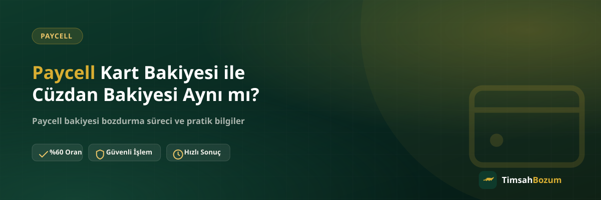

Paycell uygulamasını açan birçok kullanıcı, ekranda birden fazla bakiye görebildiğini fark eder: biri cüzdandaki ana bakiye, diğeri Paycell Kart'a bağlı tutar. İkisi de "Paycell bakiyesi" gibi göründüğü için bozum yapmadan önce hangisinin ne olduğunu, hangisinin bozdurulabileceğini bilmek işlemi hem senin hem bizim için netleştirir.
Paycell Kart ve Cüzdan Arasındaki Temel Fark Nedir?
Paycell cüzdanı, uygulamanın ana ekranında gördüğün genel bakiyedir; fatura ödemesi, transfer veya alışveriş gibi işlemler için kullanılır. Paycell Kart ise bu cüzdana bağlı, sanal veya fiziksel şekilde kullanılabilen ayrı bir ödeme aracıdır. Kart, çoğu zaman cüzdandan yüklenir ama kendi bakiyesini ayrı bir ekranda gösterebilir. Bu ayrım kafa karıştırıcı olabilir, çünkü ikisi de aynı uygulama içinde, aynı hesaba bağlı olarak çalışır.
Paycell Kart Bakiyesi Nereden Gelir?
Paycell Kart bakiyesi genellikle cüzdandan yapılan bir yükleme ile oluşur; yani önce cüzdana giren bir tutar, kullanıcı tercihine göre karta aktarılabilir. Bazı kampanya veya hediye bakiyeleri de doğrudan karta tanımlanabilir. Kaynağı ne olursa olsun, kartta göründüğü anda bu tutar kart bakiyesi olarak kabul edilir ve cüzdandaki ana bakiyeden ayrı takip edilir.
Cüzdan Bakiyesi Nereden Gelir?
Cüzdan bakiyesi; banka kartından yükleme, transfer alma veya kampanya yoluyla kazanılan tutarların toplandığı ana havuzdur. Paycell uygulamasını açtığında ilk gördüğün, genellikle en büyük ve en sık kullanılan bakiye budur. Fatura ödemeleri ve çoğu işlem bu bakiyeden düşülür.
Bozum İşleminde Hangisi Geçerli Olur?
TimsahBozum'da bozum işlemi, güncel olarak elinde bulunan Paycell bakiyesi üzerinden değerlendirilir. Kart ve cüzdan bakiyesi aynı Paycell hesabına bağlı olduğu için ikisi de bakiye tabanlı kabul edilir ve kısmi bozum mümkündür. Ancak hangi ekranda ne kadar tutar gördüğünü net şekilde belirtmen önemli; "kartımda şu kadar, cüzdanımda şu kadar var" demek, karşı taraftaki hattın doğru bilgiyle işlem yapmasını sağlar. Güncel teyit için her zaman Paycell bozdurma hattımızdan WhatsApp üzerinden bilgi almanı öneririz.
Kart ve Cüzdan Bakiyesini Aynı Anda Bozdurabilir miyim?
Evet, ikisi ayrı ekranlarda görünse de aynı mesajda bildirmen mümkün. Her bir bakiyenin güncel tutarını ve ekran görüntüsünü ayrı ayrı net şekilde paylaşman, işlemin tek seferde ve doğru şekilde değerlendirilmesini sağlar. Bunu tek tek, farklı zamanlarda bildirmek yerine aynı mesajda toplamak süreci hızlandırır.
Hangi Ekran Görüntüsünü Göndermeliyim?
Bozdurmak istediğin bakiyenin göründüğü ekranın güncel ve okunaklı bir görüntüsünü paylaşman yeterli. Kart bakiyesini bozduracaksan kart ekranını, cüzdan bakiyesini bozduracaksan cüzdan ana ekranını göndermen, karşı taraftaki hattın doğru bakiyeyi görmesini sağlar. İkisini karıştırmak işlemi iptal etmez ama doğru ekranı tekrar istememizi gerektirebilir, bu da süreci bir adım geciktirir.
Kart Bakiyesi Cüzdana Geri Aktarılabilir mi?
Bu, Paycell uygulamasının kendi işlevleriyle ilgili bir konu ve TimsahBozum'un bozum sürecinin kapsamı dışında kalıyor. Kart bakiyesini cüzdana geri aktarmak istiyorsan bunu uygulama içindeki ilgili menüden yapman gerekir. Bozum tarafında bizim için önemli olan, hangi ekranda ne kadar bakiye olduğunu görmemiz; aktarım işlemini kendin tamamladıktan sonra güncel cüzdan bakiyeni bize bildirebilirsin.
Hesabıma veya Karta Erişim Vermem Gerekir mi?
Hayır. Kart ya da cüzdan bakiyesi olsun, hiçbir durumda hesabına erişim istenmez, şifre veya SMS doğrulama kodu sorulmaz. Tek paylaşman gereken, değerlendirmek istediğin bakiyeyi gösteren güncel bir ekran görüntüsü. Böyle bir talep alırsan bunun resmi hattımızla ilgisi olmadığını bilmen, olası bir dolandırıcılık girişimine karşı en temel korumandır.
Kart Bakiyesini Yanlışlıkla Cüzdan Diye Bildirirsem Ne Olur?
Bu durum işlemi iptal etmez ama bir adım geciktirebilir. Hattımız paylaştığın ekran görüntüsüne bakarak bakiyenin kart mı yoksa cüzdan mı olduğunu anlayabilir, ama doğru bilgiyi baştan vermen süreci tek turda tamamlamanı sağlar. Emin değilsen, "hangi ekran olduğunu bilmiyorum, ekran görüntüsü bu" demen bile yanlış bir etiket vermekten daha sağlıklı; görsel üzerinden doğru tespit kolaylıkla yapılabilir.
Kart ve Cüzdan Bakiyesi Oranı Farklı mı?
Hayır, ikisi de aynı Paycell hesabına bağlı bakiye olduğu için güncel referans oranımız her ikisinde de aynı şekilde geçerli. Oranın kart veya cüzdan ayrımına göre değişmesi gibi bir durum yok; işlem öncesi güncel oranı WhatsApp'tan teyit etmek, hangi bakiye türünü bozduracaksan da aynı şekilde geçerli.
Hangi bakiyeni bozdurmak istediğine karar verdiysen, ilgili ekranın güncel görüntüsüyle WhatsApp hattımıza yazman yeterli. Oranı teyit ettikten sonra süreç aynı gün içinde ilerler.
İlgili Yazılar
- Paycell Bakiyesi Nasıl Oluşur, Nereden Gelir?
- Paycell Cüzdanıma Nasıl Bakiye Yüklerim?
- Paycell Bakiyesini Kısmi Bozdurmanın Avantajları